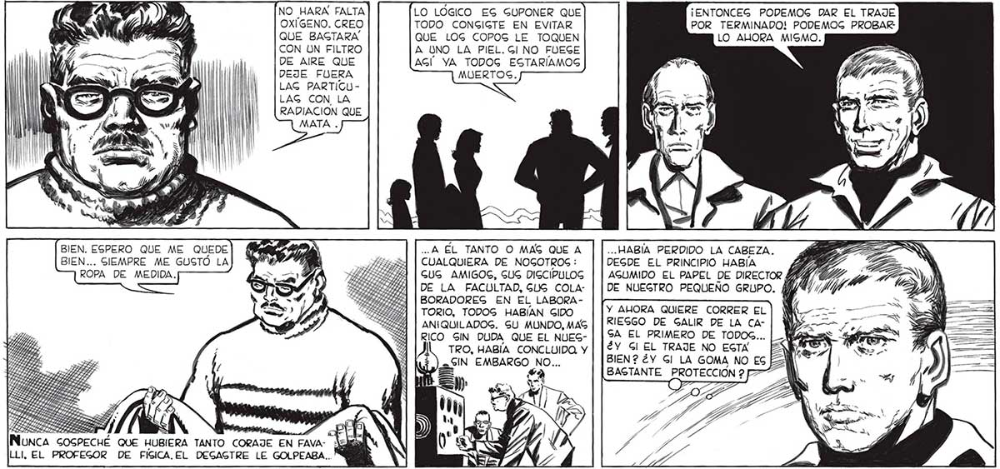
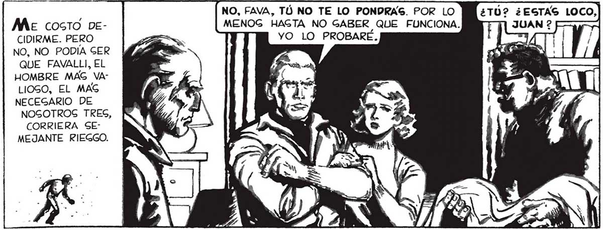

NO HARA FALTA LO LOGICO EG GUPONER QUE ¡ENTONCEG PODEMOG DAR EL TRAJE OXÍGENO. CREO TODO CONGIGTE EN EVITAR POR TERMINADO! PODEMOG PROBAR QUE BAGTARA QUE LOG COPOG LE TOQUEN LO ALORA MISMO. CON UN FILTRO A UNO LA PIEL. GI NO FUEGE DE AIRE QUE AGÍ YA TODOG EGTARÍAMOG DEJE FUERA MUERTOS. LAG PARTIGULAG CON LA RADIACION QUE BIEN. ESPERO QUE ME QUEDE] fia IN ...A EL TANTO O MAS QUE A ... HABÍA PERDIDO LA CABEZA. BIEN... SIEMPRE ME GUSTÓ LA] pW 2 ¿Bs | CUALQUIERA DE NOGOTROG: DEGDE EL PRINCIPIO HABÍA Ze ROPA DE MEDIDA. Es sl ALLA | SUS AMIGOS, GUG DIGCIPULOG | | ASUMIDO EL PAPEL DE DIRECTOR á pa : DE LA FACULTAD, GUG COLA- | | DE NUEGTRO PEQUEÑO GRUPO. él BORADORES EN EL LABORAANIQUILADOG. SU MUNDO, MAS | | RIESGO DE GALIR DE LA CARICO SIN DUDA QUE EL NUEG- | [24 El PRIMERO DE TODOS... TRO, HABÍA CONCLUIDO. y | | ¿Y Sl EL TRAJE NO EGTA E ES e BAGTANTE PROTECCIÓN 257 F7 NO, FAVA, TÓ NO TE LO PONDRAS. POR LO Me costo De- MENOG HAGTA NO GABER QUE FUNCIONA. CIDIRME. PERO > YO LO PROBARE. NO, NO PODÍA GER "e QUE FAVALLI, EL HOMBRE MAG VALIOSO, EL MAG NECEGARIO DE NOGOTROS TRES, TÓ TIENES TU MUJER Y TU NENA, YO, EN CAMBIO, PUEDO DESAPARECER SIN QUE A NADIE SE LE MUEVA UN PELO. YA LO PENGÉ, FAVA... CORRIERA SEMEJANTE RIEGGO.

